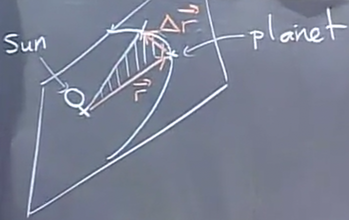

Velocity and Acceleration
Table of Contents
1. Velocity and Acceleration
Recall that we can use parametric equations to obtain a position vector. To get the velocity from our position vector, we take the derivative with respect to time:
\[ \vec{v} = \frac{\text{d}\vec{r}}{\text{d}t} = \langle \frac{\text{d}x}{\text{d}t},\frac{\text{d}y}{\text{d}t}, \frac{\text{d}z}{\text{d}t} \rangle \]
This is a vector quantity, as it not only has magnitude but also direction. The scalar value of speed is simply the magnitude of the velocity.
The acceleration is how fast the velocity is changing; in other words, the derivative of the velocity:
\[ \vec{a} = \frac{\text{d}\vec{v}}{\text{d}t} \]
Realize that even if the speed is not changing, if the direction is changing then there is acceleration.
1.1. Arc Length
The arc length, \(s\), is the distance travelled along a trajectory. We can take the derivative of this to obtain speed:
\[ \frac{\text{d}s}{\text{d}t} = \|\vec{v}\| \]
It is also possible to recover the length of the trajectory by integrating \(\frac{\text{d}s}{\text{d}t}\), but this is not always feasible.
1.2. Unit Tangent Vector
The velocity vector points tangent along the trajectory, and the unit tangent vector is simply that rescaled to a unit:
We can therefore say that:
\[ \hat{T} = \frac{\vec{v}}{\|\vec{v}\|} \]
Now, consider using the chain rule for velocity:
\[ \vec{v} = \frac{\text{d}\vec{r}}{\text{d}t} = \frac{\text{d}\vec{r}}{\text{d}s} \frac{\text{d}s}{\text{d}t} = \hat{T} \|\vec{v}\| \]
This reveals an identity:
\[ \frac{\text{d}\vec{r}}{\text{d}s} = \hat{T} \]
2. Kepler's Second Law
We can use Kepler's Second Law to illustrate the use of velocity and position vectors. Kepler's Second Law states that the motion of planets is in a plane, and that the area swept out by the line from the Sun to the planets is at a constant rate.
What this is saying is that the area swept out by the planets are all at a constant rate, proportional to time. This implies that planets closer to the Sun, that sweeps out less area per unit time compared to planets farther away from the Sun, which means that they must go faster than planets farther away.
Now, consider the following diagram and vectors of the system:

The position vector, \(\vec{r}\), changes by \(\Delta \vec{r}\). Realize that to find the area of this space, we can approximate it to be a triangle when \(\Delta \vec{r}\) is small. Therefore, we can use cross product to find the area:
\[ A \approx \frac{1}{2} \|\vec{r} \times \Delta\vec{r}\| \]
Now, since velocity is \(\frac{\Delta \vec{r}}{\Delta t}\), we can rewrite this as:
\[ A \approx \frac{1}{2} \|\vec{r} \times \vec{v} \| \Delta t \]
Realize that the law is saying that this area is proportional to time; in other words, it's saying that \(\|\vec{r} \times \vec{v}\|\) is constant. Now, since the planets are also moving in one plane, that plane contains \(\vec{r}\) and \(\vec{v}\). This means that \(\text{dir}(\vec{r} \times \vec{v})\) is always constant, namely, perpendicular to this plane. Thus:
\[ \frac{\text{d}}{\text{d}t}(\vec{r} \times \vec{v}) = 0 \]
We can use the product rule like so:
\begin{aligned} \frac{\text{d}\vec{r}}{\text{d}t} \times \vec{v} + \vec{r} \times \frac{\text{d}\vec{v}}{\text{d}t} &= 0 \\ \vec{v} \times \vec{v} + \vec{r} \times \vec{a} &= 0 \\ \vec{r} \times \vec{a} &= 0 \end{aligned}The only time in which the cross product of two vectors equals to zero is when they are parallel to each other. In other words, the acceleration vector is parallel to the position vector. In other words, there is a central force from the planets to the Sun.